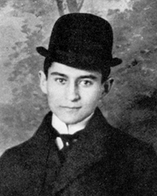

Франц Кафка
Роки життя: 1883−1924
Читати:
«Перевтілення» (скорочено)
Кафка народився 3 липня 1883 року в єврейській сім'ї Празі (Богемія, в той час — частина Австро-Угорської Імперії). Його батько — Герман Кафка (1852—1931), вийшов з чеськомовної єврейської громади, з 1882 р. був торговцем галантерейними товарами. Мати письменника — Юлія Кафка (Леві) (1856—1934) — віддавала перевагу німецькій мові. Сам Кафка писав німецькою, хоча чеську знав чудово. Розмовляв він і французькою мовою. Будучи євреєм, Кафка практично не володів їдишем та почав виявляти цікавість до традиційної культури євреїв тільки в двадцятирічному віці під впливом театральних труп, що гастролювали в Празі; інтерес до вивчення іврита виник тільки в кінці життя.
У Кафки було два молодших брати та три молодші сестри. Обидва брати, не досягши і дворічного віку, померли до того, як Кафці виповнилося 6 років. Сестер звали Еллі, Валлі та Оттла (всі троє загинули під час Другої світової війни в нацистських концентраційних таборах у Польші). В період з 1889 по 1893 рр. Кафка відвідував початкову школу, а потім гімназію, яку закінчив в 1901 році. Закінчивши Празький Університет Карлов, отримав ступінь доктора права (керівником роботи Кафки над дисертацією був професор Альфред Вебер), а потім поступив на службу чиновником в страховому відомстві, де і пропрацював на скромних посадах до передчасного — через хворобу — виходу на пенсію в 1922 році. Робота для письменника була заняттям другорядним та обтяжливим: у щоденниках та листах він буквально признається в ненависті до свого начальника, товаришів по службі та клієнтів. На першому ж плані завжди була література, «реабілітовуюча все його існування». У 1917 після легеневого крововиливу розвився туберкульоз, від якого письменник помер 3 червня 1924 року в санаторії під Віднем
Творчість та ім’я Франца Кафки досить популярні на Заході.У багатьох творах зарубіжних письменників неважно виявити мотиви і образи,які наявні саме творчістю Кафки,- його творчість не тільки вплинула на художників,які належали літературному авангардові.
Кафка належить до тих письменників, зрозуміти і розтлумачити яких не так просто.
Франц Кафка народився в сім’ї єврея,оптового торговця галантерейними товарами в Празі (1883р.)Благоустрій родини поступово зростав,але розуміння і відношення всередині сім’ї залишалися при цьому у світі темного міщанства,де всі інтереси зосередились на "справі”,де мати безсловесна,а батько безпосередньо хизується тими приниженнями і бідами,які він перетерпів для того,вбитися в люди.І в цьому темному і затхлому світі народився і ріс письменник не тільки тендітний і слабкий фізично,але і чутливий до всякого прояву несправедливості,неповаги,грубості і корисливості.
Твори Кафки досить образні метафоричні.Його великий твір "Перетворення”,романи "Процес”,”Замок”- це все переломлена в очах поета реальність, яка оточувала його, тогочасне суспільство.
Твори які побачили світ при житті поета :
"Споглядання”(1913),”Кочегар”(1913),”Перетворення”(1915),”Вирок”(1916), ”Сільський лікар”(1919),”Голодарь”(1924).
Основні твори були видані після смерті письменника. Серед них "Процес”(1925),”Замок”(1926),”Америка”(1927).
Твори Кафки за останній час перетворилися в нас в інтелектуальний
бестселер: двотомник, трьох-,чотирьохтомник, і усі за останні кілька років. Є різні причини такого бума, що напрошується – наочність підтверджень давньої сентенції: "Ми породжені, щоб Кафку зробили минулим”, - усе – таки навряд чи пояснює всі і до кінця. Як не намагалися представити Кафку творцем абсурду, що запанував у світі (звідти, до речі, і перманентний страх, що вселяється цілком аполітичним письменником радянського офіціозу, на кожнім кроці видавшому небажані аналагії), таким прочитанням уловлюється лише одна з граней його творчої індивідуальності: істотна, але не визначальна. По щоденниках це видно відразу.
Щоденники взагалі багато чого коректують у сформованих представленнях, які своєю стійкістю перетворили Кафку якщо не в символ, то в значиме ім’я з зовсім визначеним набором конотацій. Почуваючи, що запису, що робилися Кафкою для одного себе, часом дуже не відповідають судженням про нього, що стали безперечними для масової свідомості, виконувач духівниці і перший біограф письменника Макс Брід не поспішав з їхньою публікацією. Перша збірка з’явлася лише через десять років після того, як були надруковані обоє знаменитих романів, а вслід їм і "Америка”.
Кафка в житті видавався в собі невпевненими, змученими підозрами щодо своєї літературної та й людської заможності. Які почуття випробував би Кафка, будь йому призначено дожити до днів запізненої слави? Швидше за все жах – щоденники, у яких він відвертий як ніде більше, роблять таке припущення майже безсумнівним. Тому що про Кафку думають як про явище, і навіть не стільки літературне, скільки соціальне, так що повсякденним стає слівце "кафкіанський”- позначення, що травмує безглуздості, відразу пізнаваної, оскільки будь – якому відомої по власному сумному досвіду, - і книги цього празького ізгоя починають сприймати як свого роду белетризирування посібника для того, хто вивчає механіку тотальну чи бюрократизації всевладдя трагічного алогізму, буденності.
Але він не хотів бути явищем .Менш усього він усвідомлював себе в якості репрезентативної фігури, так ніколи і не почував дійсної причетності до того, чим жили, до чого прагнули інші. Розбіжність з ними, болісні незримі бар’єри - от предмет самих невідступних міркувань, якими заповнюються щоденники всі тринадцять років, що Кафка їх вів, перевернувши останню сторінку в червні
1923-го, менш чим за місяць до смерті.
Ці міркування майже незмінно носять форму гірких докорів самому собі.”Я відділений від усіх речей порожнім простором, через границі якого я навіть
і не прагну пробитися” що-небудь у такому дусі повторюється усе знову і знову.
Зрозуміло, до чого важко переживав Кафка свій щиросердечний параліч, як він найчастіше називає цю байдужість, що не залишає "навіть щілинки для сумніву віри, для любові чи відрази, для відваги чи страху перед чимось визначеним”.
Останнє уточнення найвищою мірою важливо: байдужість не була нечутливістю.
Вона була тільки наслідком особливого психологічного стану, що не дозволяло Кафці відчувати як щось серйозне і важливе для нього все те, що мало визначеність і значустістю в очах навколишніх. Чи йде мова про кар’єру, чи матримоніальні перспективи("якщо я доживу до сорока років, то, напевно, женюся на старій діві з виступаючими вперед, не прикритими верхньою губою та зубами "), навіть про світовій війні, що почалося – він усьому думає по своєму, прекрасно розуміючи, що цієї особистістю думки і почуття лише збільшується йог нескінченна самотність і що отут нічого не поправити. "Який дивовижний світ тісниться в моїй голові? Але як мені звільнитися від нього і звільнити його, не розірвавши?”.
Творчість Кафки багато разів намагалися витлумачити саме як таке звільнення, благо в тім же записі 1913 року далі сказано, що позбутися від химер, що опанували свідомістю, зовсім необхідно, ”для того я і живу на світі”. Але якщо і справді проза була для Кафки спробую подібно "витиснення”, результатом виявилась невдача, тому що – читачам щоденників це видно занадто чітко – ніякої сублімації не відбулися: комплекси, роздирання, страхи тільки підсилювалися в Кафки з кожним прожитим роком і тональність записів робилася лише більш драматичної. Хоча капітуляції не було. Просто з кожним роком Кафка все безперечніше переконувався в тім, що по усьому своєму людському складі він, на тлі навколишніх, інший, що він існує як би в інших мірах, в іншій системі понять. І що от це, власне, є магістральний сюжет його життя – стало бути, його прози теж.
Він адже справді іншої в усьому , аж до дріб’язків ,точно, якщо дивитися , його ніщо не зближає і не ріднить хоча б з тими ,хто зіграв дійсно велику роль у його долі ,як той же Брід , чи Феліца Бауер, з яким було двоє заручин, обидві розірвані, чи чеська журналістика, Милена Єсенська. Тяжка ситуація, що постійно викликає в Кафки приступи відрази до себе чи нескориме почуття повної безнадійності. Він несміливо намагається боротись із собою, пробує узяти себе в руки, але те і справа такі настрої опановують настільки сильно, що від них уже немає захисту. І тоді з’являються записи що говорять самі за себе, як от ця, стосовна до жовтня 1921-го:”Усі – фантазія: родина, служба, друзі, вулиця; усі – фантазія, більш – менш близька, і дружина – фантазія; найближча ж правда тільки в тім, що ти б’єшся головою об стіну камери, у якій нема ні вікон, ні дверей”.
Про Кафку пишуть як про аналітика відчуження, що позначалося на всім характері людських відносин у сторіччі, що іде, як про письменника, наділеному особливим дарунком зображення всіляких соціальних деформацій, як про "писемістичного конформіста”, якому чогось протиставити страшним фантомам, що зробилися реальніше, ніж зрима вірогідність, як про прозаїку.
Слово мовив сам Кафка, причому багато разів: це слово – самотність, і таке абсолютне, "що можна назвати тільки росіянином”. У його щоденниках воно часто замінюється в синонімах, і К говорить про знову пережитий їм нестерпному стані, коли важким стає будь-яке спілкування, про пре наступному його свідомості своєї причесності на нещастя, про те, що усюди і завжди він почував себе чужим.
Помер великий австрійський письменник в 1924 році. Похований в Празі.